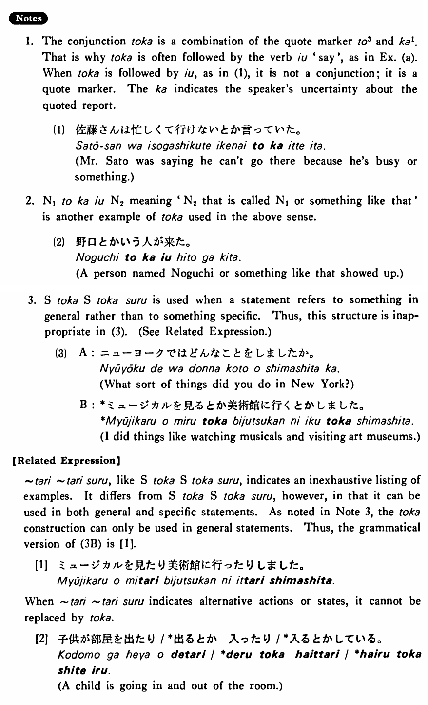

←
DoJG
→
とか
(B. 488)
Example sentences
(ksa).
私はバッハ
とか
モーツアルト
とか
ベートーベンが好きだ・好きです。
I like Bach, Mozart and Beethoven, among others.
(ksb).
疲れた時はお風呂に入る
とか
早く寝る
とか
しなさい。
When you are tired, do things like taking a bath or going to sleep early.
(a).
日本の茶道
とか
生け花
とか
いうものをよく知らない。
I don't know much about things like the Japanese tea ceremony and flower arranging.
(b).
A:どんな日本の映画を見ましたか。 B:黒沢の「七人の侍」
とか
「生きる」
とか
「影武者」を見ました。
A: What kind of Japanese movie did you see? B: I saw Kurosawa's Seven Samurai, Ikiru and Kagemusha.
(c).
A:日曜日にはどんなことをしていますか。 B:音楽を聞く
とか
、本を読む
とか
しています。
A: What sorts of things do you do on Sundays? B: I do things like listening to music or reading books.
Formation
(i)
Noun
とか
Noun
とか
…
学生
とか
先生
とか
…
Students and teachers… (among others)
(ii)
Sinformal
とか
Sinformal
とかする
テレビを見る
とか
本を読む
とかする
Do such things as watching TV or reading books
